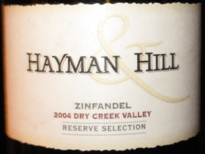

|
North America >
USA >
California >
Sonoma County >
Dry Creek Valley >
Hayman & Hill >
Zinfandel Reserve Selection
2004 Zinfandel Dry Creek Valley Reserve Selection
Hayman & Hill
Graton, CA

Selection no. 45 winemakers collection.
Grown on red soil.
Price: $15
13.5% alcohol
750 ml

2011 tasting ($12) - An excellent, oaky bouquet introduces this blackish red Zinfandel. The light flavor is slightly spicy
with a chewy aftertaste.
2010 tasting ($15) - A dark, opaque red with a deep, chewy bouquet, this Zin has a complex, interacting flavor coupled to a
light, awesome aftertaste.
2008 tasting ($15) - A light red, this wine needs time to oxidize before drinking. As a Zin with a fruity, tart bouquet
one is not surprised that the flavor is also light and tart, however there are also spicy notes indicative of the Dry
Creek terroir which develop into the dry finish.
More about Zinfandel.
|